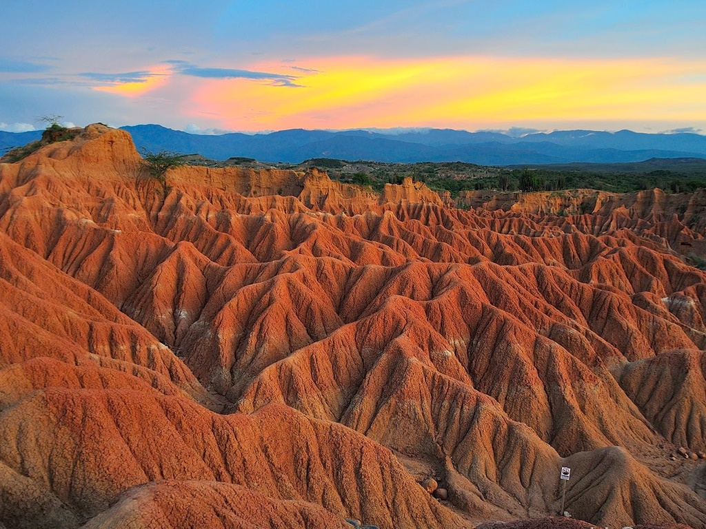
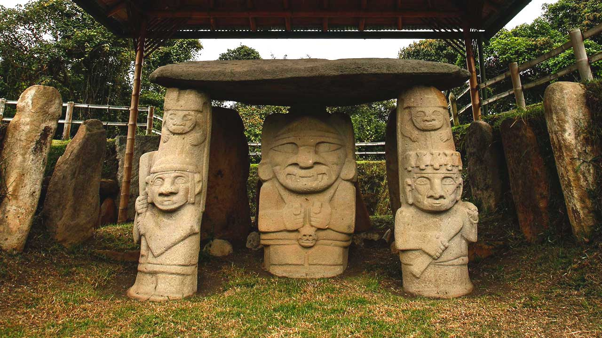
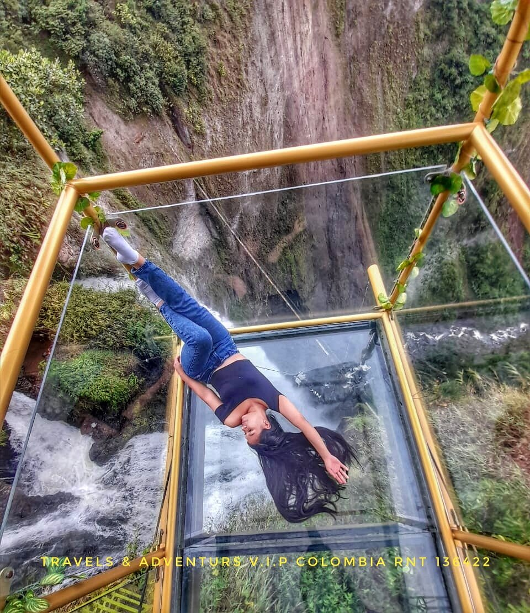

desierto de la tatacoa
El desierto de la Tatacoa es una región semiárida ubicada en el departamento del Huila, Colombia. Presenta procesos de erosión, cactus, arbustos espinosos, condiciones extremas del clima y hallazgos fósiles.
Estudios científicos revelan que durante el Período terciario La Tatacoa fue un jardín con flores y árboles que poco a poco se fue secando hasta convertirse en desierto.
Es uno de los principales atractivos ambientales y turísticos de Colombia. Llama la atención de científicos de diversos países que investigan la evolución de la Tierra y de los organismos vivos.
Es la segunda zona árida más extensa de Colombia después de la Península de La Guajira. La Tatacoa no es justamente un desierto, sino un bosque seco tropical.

parque arqueologico de san agustín
El parque arqueológico de San Agustín es uno de los más importantes espacios arqueológicos de Colombia, ubicado sobre el vértice que forman las cordilleras central y oriental, en el sur del Alto Magdalena,
cerca del nacimiento del río Magdalena, en el sur del departamento del Huila, en el municipio de San Agustín.
Fue fundado el 20 de noviembre de 1935, durante el primer gobierno de Alfonso López Pumarejo, y en 1995 fue declarado Patrimonio de la Humanidad por la Unesco. Es la necrópolis de mayor extensión a nivel mundial.

el salto del mortino
Este complejo turístico se encuentra junto a la cascada El Salto de Mortiño, una caída de agua catalogada entre las más hermosas de Sudamérica.
Justo sobre la vía (a mano derecha si vas desde San Agustín a Isnos, o a manos izquierda en la dirección contraria), verás su letrero enorme invitándote a la aventura.
Cuando llegues a ese punto, asegúrate de seguir bien las señales de la entrada al lugar. En el mismo sitio hay otras fincas que pueden confundirte al llegar. No es difícil entrar. Solo sigue bien las señales.
